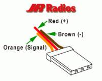

For a program to control a servo motor with the Raspberry Pi, see
video .
The video shows how to connect the motor and how to compile and start the program.
The program uses the hardware
PWM module, which generates a very clean signal.
But be careful: some servo motors don't have a flyback diode, and bigger servo motors may need more current, which can both destroy your Raspberry Pi, if you power it from the 5V supply of the Raspberry Pi.